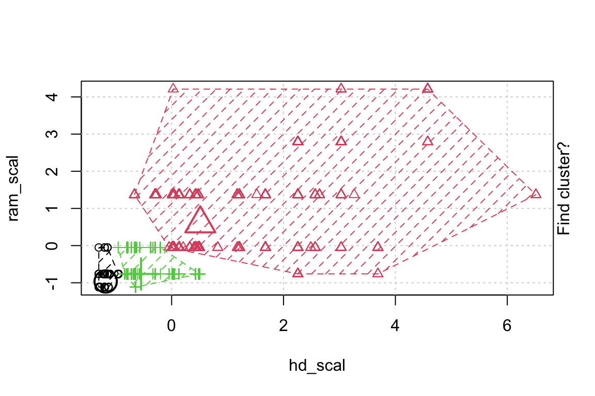

7 Clusteranalyse
Mit der Clusteranalyse wird versucht, Elemente (Fälle) nach ihren Merkmalen (mehrere Variablen) in Gruppen (Clustern) zusammenzufassen. Die Problemstellung lautet als: Wie können Fälle in einem Datensatz nach mehreren Variablen gruppiert werden?
Die Clusteranalyse gehört zu den explorativen Verfahren. Im Kontext des Machine Learnings (ML) wird sie auch zu den «unsupervised learning»-Verfahren gezählt.
Das Grundsätzliche Vorgehen ist bei allen Arten von Clusteranalysen gleich bzw. ähnlich: Wir suchen Gruppen (Cluster) von Fällen, die sich untereinander so stark wie möglich ähneln (homoge Cluster) und so stark von den anderen Gruppen unterscheiden wie möglich. Es geht also um Segmentierung anhand von Mustern in den Daten und nicht um Sortierung anhand vorgegebener Kategorien. Wir wollen also stark Vereinfachen (wenige Cluster), aber auch wenig Heterogenität in den Clustern, wobei die eben immer kleiner wird, je mehr Cluster man bildet. Das führt zu einem Optimierungsproblem (siehe @ref(fig:CA-Optimierung)), das die Clusteranalyse ganz gut lösen kann, da in der Regel die Heterogenität innerhalb der Cluster stark sinkt, wenn man ein Cluster in zwei aufteilt und auch dann, wenn man drei Cluster versucht zu finden und zu optimieren, aber schon etwas weniger als von eins auf zwei. Wenn man statt drei, vier Cluster zulässt und verteilt, dann sinkt die Heterogenität nochmals weiter, aber wieder etwas weniger als im Schritt davor. Das schauen wir weiter unten nochmal technisch an, wenn es um den «Heterogenitätsknick» geht, der als «Ellenbogen» gesehen werden und damit als Kriterium für eine gute Clusterlösung herhalten kann.
7.1 Voraussetzungen von Clusteranalysen generell
Nicht zu viele fehlende Werte, da fehlende Werte die Clusterbildung verzerren.
Das Skalenniveau spielt grundsätzlich keine Rolle, da Methoden der Clusteranalyse gibt (hierarchische Clusteranalyse), die auch mit kategorialen (nominale mit mehreren Ausprägungen) Variablen und ordinalen Variablen gut umgehen kann. Bei Clusteranalysemethoden mit Distanzmassen (wie k-Means-Clustering) müssen die Distanzen interpretierbar sein und mithin metrisch skaliert, was aber auch von den Dummys erfüllt wird.
Die Fallzahl sollte nicht zu klein sein. Es werden für brauchbare Clusteranalysen ordentliche Fallzahlen benötigt. Vor allem gilt das, wenn einzelne Variablenkombinationen (wichtig für die Gruppenbildung) dünn besetzt sind.
Die Variablen sollten ähnlich skaliert sein, damit nicht eine Variable mit einem deutlich grösserem Gewicht in die Clusteranalyse eingeht, nur weil sie breiter skaliert ist. Bei sehr unterschiedlichen Skalierungen empfiehlt sich eine vorherige Standardisierung (z-Transformation bzw. scale) der Variablen (bei vorheriger Faktorenanalyse ist das schon gegeben, weil Faktoren immer standardisiert sind (\(\overline{x}\) = 0, sd = 1)).1 ## Vorgehensweise
Zunächst muss man festlegen, welches Mass für die Ähnlichkeit oder die Distanz stehen soll. Diese «Proximitätsmasse» können folgende Distanzmasse sein: euklidische Distanzen bei metrischen Variablen (Distanz d ist die Wurzel der Summe aller quadrierten Abstände in den Richtungen der Variablendimensionen: \(d = \sqrt{(q_1-p_1)^2 + (q_2-p_2)^2}\)).

Es gibt weitere Distanzmasse auch für metrische Variablen. Bei dichotomen Variablen gibt es noch den M-Koeffizienten, der schlicht die Übereinstimmungen wiedergibt (also in allen Variablen eine 1 oder in allen Variablen eine 0 oder nur in Teilen usw.).
Neben diesen Massen für die Distanz bzw. Nähe im geometrischen Sinne, gibt es noch Ähnlichkeitsmasse. Dazu zählt zum Beispiel der Q-Korrelationskoeffizient, der dasselbe ist, wie Pearsons Korrelationskoeffizient. Die Korrelationen können bei stetigen Variablen verwendet werden. Bei kategoriellen Merkmalen kann \(\chi^2\) verwendet werden. Eine kleine Systematik der Clusteranalyse findet sich in Abbildung @ref(Clustersystematik).

Dann muss noch der Cluster-Algorithmus gewählt werden. Es gibt die «Hierarchische Clusteranalyse» mit «Single-Linkage» und mit «Complete Linkage». Für metrische Variablen können partionierende Clusteranalysen eingesetzt werden, wie der k-Means-Algorithmus oder der Two-Stage-Algorithmus. Die einfachste Methode ist im Grunde die k-Means-Cluster-Methode, die daher hier als erste etwas genauer angeschaut und in R berechnet werden sollte.
Nehmen Sie also den Code und probieren Sie es aus. So können Sie praktisch üben.
7.2 Die k-Means-Cluster-Methode
In der Schrittweisen «Animation» der k-Means-Clusterung in Abbildung @ref(kmeans-Animation) sieht man, wenn man genau hinschaut, wie die Cluster am Anfang zufällig verteilt werden, dann alle Fälle, den ihnen am nächsten gelegenen Clusterzentrum zugeordnet werden und die «Clusterzentren» eigentlich erst dann in das Zentrum ihres Clusters gelegt werden. Dann kann es vorkommen, dass einzelne Fälle dichter an einem anderen Cluster liegen und werden deshalb eben diesem Cluster zugeordnet, in dessen Nähe sie liegen. Danach liegen die Clusterzentren wieder nicht mehr genau im Zentrum ihres eigenen Clusters und werden erneut so verschoben, dass sie genau in dessen Mitte liegen.


Mit diesen Befehlen kann man eine schöne Clusteranalyse laufen lassen.
Wenn man einzelne Variablen besonders wichtig findet in der Clusteranalyse, kann man sie erstmal standardisieren und dann mit einem Faktor multiplizieren, damit sie um den Faktor mit höherem Gewicht in die Analyse eingehen.↩︎